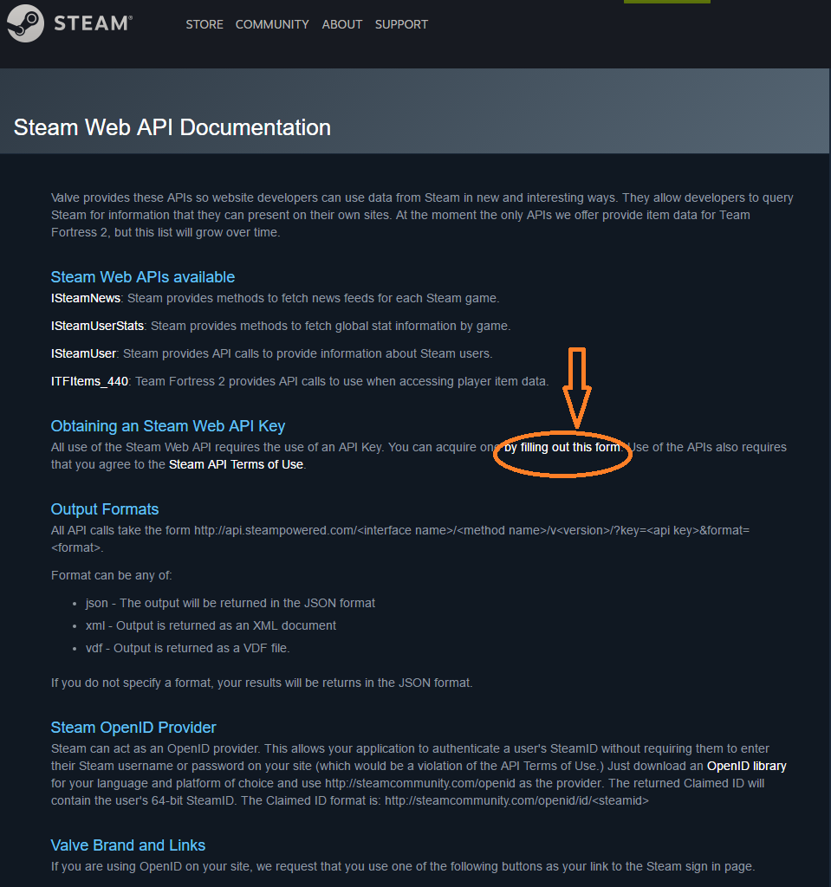
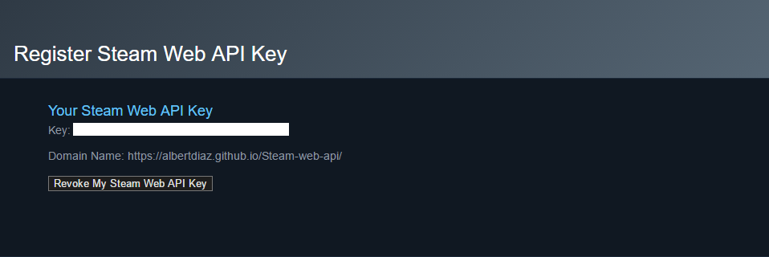

How-To Guide for the Steam Web API 
Contents
- What is an API?
- Steam Web API
- Steam Web API Key
- Obtaining a Steam Web API Key
- GetPlayerSummaries Example
1. What is an API?
The million dollar question: What is an API? API stands for Application Programming Interface and can be defined as a system of tools and resources that enable developers to create software applications. Here is another definition:
In computer programming, an application programming interface (API) is a set of subroutine definitions, protocols, and tools for building application software. In general terms, it's a set of clearly defined methods of communication between various software components. A good API makes it easier to develop a computer program by providing all the building blocks, which are then put together by the programmer. An API may be for a web-based system, operating system, database system, computer hardware, or software library. An API specification can take many forms, but often includes specifications for routines, data structures, object classes, variables, or remote calls.- Wikipedia
Get it now? Think of an API as a waiter in a restuarant. In a restaurant, you (the developer) are the customer with a menu of options to order from, and the kitchen is the system that executes your order. However, there must be a way to handle and send your order to the kitchen, and return the food to you. This is where the API comes into play. The API is the waiter that handles all the responses and requests between the customer and the kitchen. The customer does not need to know how the food was cooked or the ingredients in the food. The kitchen is a "black box" in that aspect. All the customer needs to understand is that orders are made through the waiters. Also don't forget to leave a good tip ;).
The API is the messenger that takes requests and tells the system what you want to do. Then it returns the response back to you.
2. Steam Web API
Steam's Web API is an HTTP based API that has the ability to access various features of Steam. The API contains both public and protected methods depending on the intended use.
The following uses are examples of when a protected method would be used:
- Retreiving a user's stats for a game
- Retreiving a user's list of played games
- Retreiving the ban statuses for given players
The Steam Web API is accessed by making HTTP/HTTPS requests to api.steampowered.com.
Here is the general format of each API request: http://api.steampowered.com/[interface]/[method]/[method_version]/
3. Steam Web API Key
Before we can begin using Steam's Web API we will need to obtain an API key. The API key is a code passed by computer programs calling an application programming interface to identify the calling program, its developer, or its user to the Web site. For Steam's Web API, the API key is generally required when attempting to pull information related to a user. For example, let's take a look at the GetPlayerSummaries API.
GetPlayerSummaries:
http://api.steampowered.com/ISteamUser/GetPlayerSummaries/v0002/?key=XXXXXXXXXXXXXXXXXXXXXXX&steamids=76561197960435530
In the URL above, there is a name value pair with 'key' as the name and 'XXXXXXXXXXXXXXXXXXXXXXX' would be replaced with the API key. This API returns the basic profile information for a list of 64-bit Steam IDs, but it requires the use of a registered API key to be used. This information is unique to the user is connected to a specific account. Because of this, it is important to keep this information private.
4. Obtaining a Steam Web API Key
Now that we know what an API key is and what it's used for, let's learn how to obtain one.
Step 1. Go to the Steam Web API Documentation page.
Step 2. Click on the hyperlinked words "by filling out this form" as shown in the image below.

Step 3. Log on to your Steam account or Create a new account.

Step 4. Enter your domain into the text field, agree to the Terms of Use, and click the Register button.


Step 5. Save and protect your registered API key

Alright! We are one step closer to being able to use Steam's Web API
GetPlayerSummaries Example
Results
- Gamer Tag:
- Steam ID 64:
- Country:
- Profile URL: